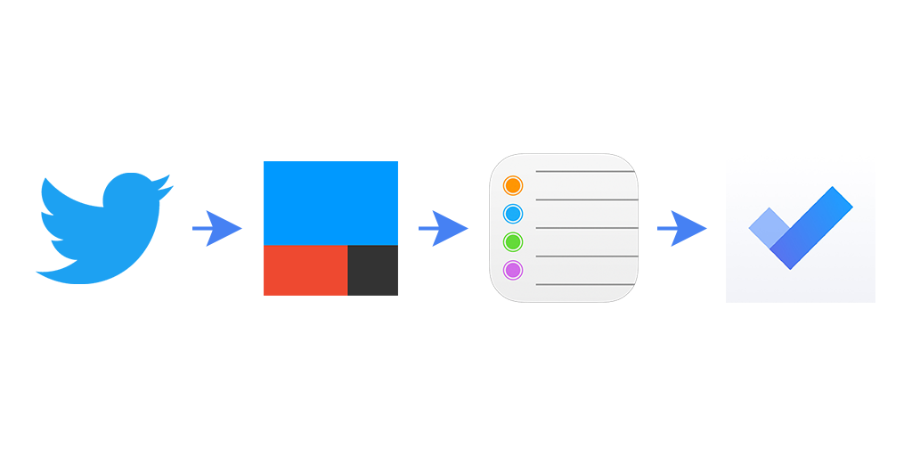
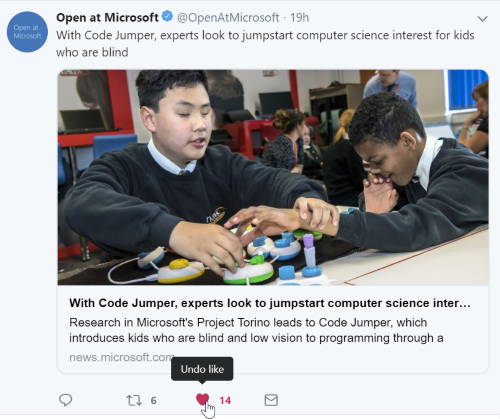
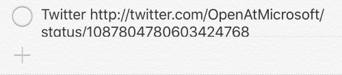
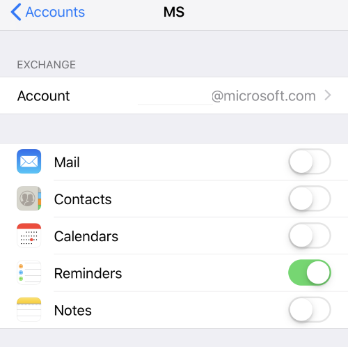
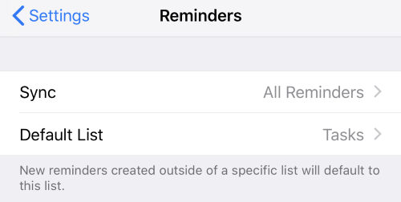
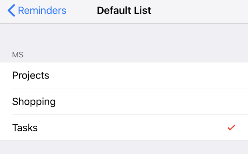
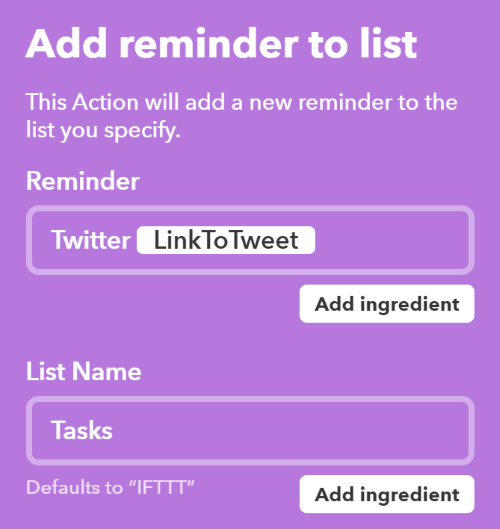

I only “like” tweets that I want to follow up on. For example, when someone tweets a new podcast I’ll “like” it as a reminder to listen to it later.
Before today, I would have to go to my “Liked Tweets” page on Twitter to find my likes and then take action on them. But there’s no way to remove a tweet from that list and I don’t want to “Unlike” them.
I recently started using the Microsoft To-Do app, which is the best To-Do app I’ve ever used, not just saying that because I work at Microsoft. It’s really great. Follow them on Twitter @MicrosoftTo-Do
It would be AWESOME if To-Do was integrated with Twitter directly, but it isn’t. Hence the following hackery.
You can, however, connect iOS Reminders to To-Do, so you can add tasks to To-Do via Siri like so: “Hey Siri, remind me to buy tacos for James”
Here’s where IFTTT comes in:
IFTTT has a Twitter: “When I like a tweet…” action and a “Create an iOS Reminder” action service.
So, the flow is this:

- I like a tweet

- IFTTT sees that like and creates an iOS Reminder


- Microsoft To-Do reads that iOS Reminder and creates a To-Do Task

So, with a custom “IFTTT Applet” I now have a way to follow up on my Twitter likes!
Setup
Here’s what you need to do to set this up.
-
Install the Microsoft To-Do app.
-
Enable iOS Reminder and To-Do Integration
- Add your email account to the iOS device
 - Go to Settings -> Reminders and select the Default List from your email account


- Add your email account to the iOS device
-
Install the IFTTT app.
- When the app loads it will ask you to enable reminder integration. Select OK.

- When the app loads it will ask you to enable reminder integration. Select OK.
-
Create new IFTTT.com applet. Here’s My Applet
- Click My Applets -> New Applet
- Choose Twitter as your service.
- Select “New liked tweet by you”

- Choose “iOS Reminders” action service

- Choose “Add reminder to list”
I use the following settings:
- Reminder = Twitter {{LinkToTweet}} (I did try various settings here and this was the one that consistently worked. It did not work anytime I included {{Text}})
- List Name = Tasks (which is the same as the iOS Reminder default reminder list in iOS Settings->Reminders)

5. Click “Create action”
Go to Twitter…like Tweets and watch them stream right into To-Do…although there will be a delay based on how frequent IFTTT polls for likes.
I hope this helps you be more productive!
Jon